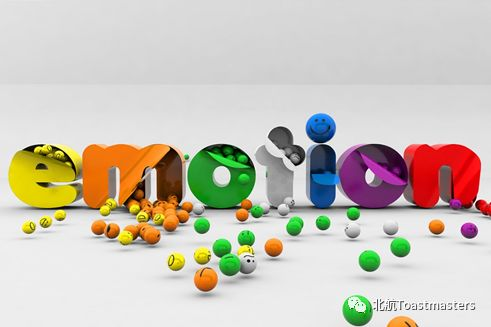
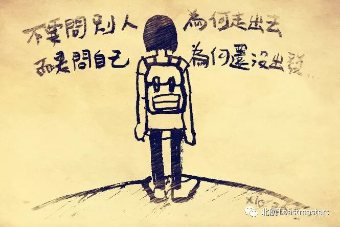

Time: 20:00-21:45, Friday, 16th March
Venue: Room A218, New Main Building, Beihang University
____________________________________________
Table Topic
Theme: Emotion
Table Topics Master: Samuel

Emotion is a strong feeling such as love, fear or anger. Positive
emotions can keep us in good state and improve work efficiency, but negative ones
may drag us down. All of these make up our colorful life.So, let’s pay attention to what emotion we are in and discuss
it.
____________________________________________
Prepared speech
Speaker: Star
Theme: CC3. A hard beginning

The first step is always difficult，especially after a so enjoyable winter holiday for us students. So how to overcome the laziness and reluctance to plunge into the new semester, as well as greeting the forthcoming bright spring ?
____________________________________________
BeihangToastmasters Club is a students' union. At the same time, we belong to a non-profit international organization calledToastmasters International.
Toastmasters International (TI) is a non-profit educational organization that operates clubs worldwide for the purpose of helping members improve their communication, public speaking, and leadership skills.You can find us by the following map of Beihang University.

https://mp.weixin.qq.com/s/bd_5TQvqv0y0luvGuDROrQ
本页为抢救式本地归档，图文已永久保存。